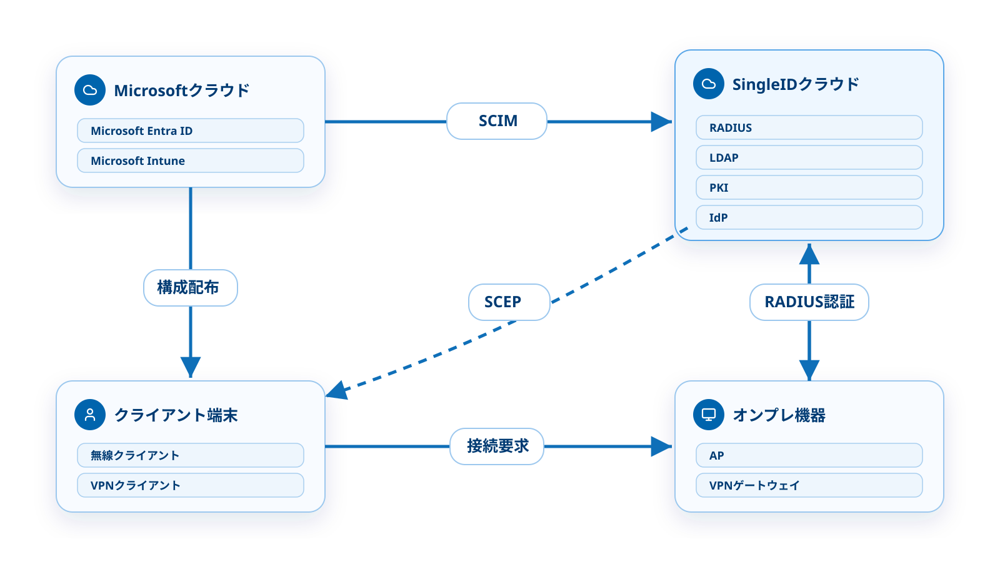
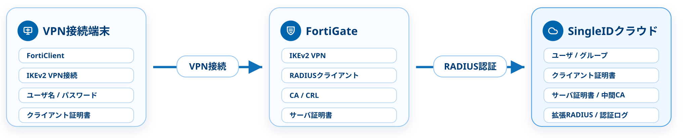
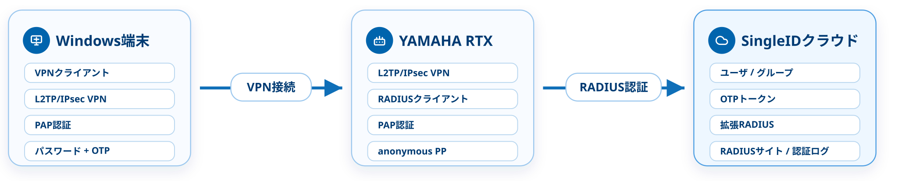
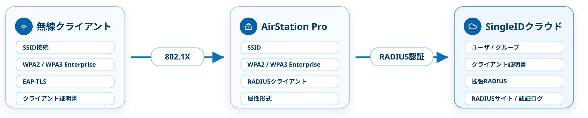

SingleID 管理者ポータル
- ユーザの登録、編集、削除、無効化、有効化
- 証明書の発行 / 失効、パスワード変更 / リセット
- ユーザの一括登録、Entra ID (SCIM) 連携、エクスポート
- グループの登録 / 削除、メンバー追加 / 削除
- RADIUSの基本情報、簡易設定
- 証明書プロファイル、証明書情報、SCEP証明書配布
- RADIUS認証ログ、操作ログの表示 / ダウンロード
Part 1 / 70 min
SingleIDを認証基盤として理解するために、アーキテクチャ、ID管理、RADIUS、PKI、認証フロー、トラブルシューティング、運用管理、可用性、機器連携を順番に学ぶ。
SingleID 技術説明ハンドブック
Part 1 / Section 1
SingleID、Microsoftクラウド、オンプレ機器、接続端末の関係を俯瞰し、ポータル、PoC環境、外部システム連携の位置づけを押さえる。
Section 1
Section 1 / Architecture Map
SingleID、Microsoftクラウド、オンプレ機器、接続端末の関係を先に押さえる。各機能の詳細ではなく、どの要素がどの方向に連携するかを示す。

Section 1 / 1
Section 1 / Portals
管理者が設定する画面と、ユーザ自身が操作する画面を分けて理解する。説明時はログイン入口、操作主体、できることを混同しない。
Section 1 / 2
Section 1 / Environments
PoC環境は、提案前検証や設定試行、認証動作検証のための環境。本番環境とは分離されており、そのまま本番利用することはできない。
Section 1 / 3
Section 1 / External Systems
SingleID単体の画面操作だけでなく、既存のID基盤や端末管理とどうつなぐかを最初に決める。
Section 1 / 4
Part 1 / Section 2
ユーザ、グループ、管理者、ユーザポータル、Entra IDのSCIM連携を、認証基盤の入口として学ぶ。
Section 2
Section 2 / Registration Methods
ユーザ登録方式は、初期投入だけでよいか、既存ID基盤と継続同期するかで選ぶ。ユーザ名とメールアドレスの一意性、同期後の更新方法を方式ごとの判断材料にする。
| 方式 | 使う場面 | 設定時の前提 |
|---|---|---|
| 個別登録 | PoC、少人数、検証用ユーザをすぐ作る場合 | ユーザ一覧で1人ずつ登録する。ユーザ名とメールアドレスは重複不可。登録するユーザ名、メールアドレス、所属グループを先に決めておく。 |
| CSV一括登録 | 初期登録人数が多く、常時同期までは不要な場合 | CSVで新規登録または既存ユーザ上書きを行う。アカウント番号、パスワードメール送信、グループ列の値で登録結果が変わる。 |
| Entra ID SCIM | Entra IDを正とし、ユーザ / グループを継続同期する場合 | SingleID側ユーザ名はUPNの@より前になる。@より前は重複不可。必須属性、アプリ割り当て、ネストグループ非対応を前提にする。 |
| SCIM API連携（ベータ） | 自社システムやID管理システムから自動連携したい場合 | ベータ扱い。利用可否、連携元システム、実装範囲、エラー時の再実行方法は、案件ごとにSingleID側へ問い合わせる。 |
Section 2 / 1
Section 2 / User Lifecycle
管理者ポータルのユーザ一覧では、登録から無効化、証明書、パスワード、一括登録、エクスポートまでを扱う。案件では操作そのものより、運用の流れを決める。
Section 2 / 2
Section 2 / Group Design
グループはユーザをまとめるだけでなく、VPNや無線LANで誰を許可するかを決める単位になる。機器側ポリシーと対応づけて設計する。
Section 2 / 3
Section 2 / Responsibility
ID管理では、管理側で行う操作と、ユーザ自身が実施できる操作が分かれている。問い合わせや手順書の作成範囲にも影響する。
| 領域 | 管理側で決めること / 操作すること | ユーザ側でできること |
|---|---|---|
| アカウント | ユーザの登録、編集、削除、無効化、有効化 | アカウント情報の閲覧 |
| パスワード | ユーザのパスワードポリシー設定、パスワード変更、設定URLメール送信によるリセット | 現在のパスワードを使った変更、セルフパスワードリセット |
| TOTP | 利用可否、対象ユーザ、案内手順を決める | FreeOTP、Google Authenticator、Microsoft AuthenticatorなどでTOTPトークンを登録する |
| 証明書 | クライアント証明書を発行し、配布方法と失効運用を決める | 配布された証明書を端末へ導入する |
| セッション | ログや設定から状況を読み取る | アクティブなログインセッションの閲覧、全セッションからログアウト |
Section 2 / 4
Section 2 / Entra ID SCIM
SCIM連携は、SingleIDへアカウント番号とEntra IDテナントIDを提供し、SingleIDから提供されるSCIM APIエンドポイントURLとAPIキーを使ってEntra ID側で設定する。
アカウント番号とMicrosoft Entra IDのテナントIDをSingleID側へ提供する。
SingleIDからSCIM APIエンドポイントURLとAPIキーが提供される。
ギャラリー以外のエンタープライズアプリを作成し、SCIM同期用にプロパティを設定する。
SCIM APIエンドポイントURLとAPIキーを設定し、属性マッピングと接続テストの成功 / 失敗を記録する。
同期対象のユーザ / グループを割り当て、少数ユーザで同期結果を見てから開始する。
Section 2 / 5
Section 2 / Entra ID SCIM Cautions
Entra IDのSCIMプロビジョニングでは、同期キー、必須属性、割り当て、グループ構造を先に決める。通知メールはSection 7の運用管理で扱う。
Section 2 / 6
Section 2 / Design Points
ID管理は、ユーザをどう登録し、何を一意な識別子にし、どのグループを認証許可の単位にするかを先に決める。あわせて利用開始時に何を案内するかを決めると、RADIUSや証明書の設計、展開手順がぶれにくくなる。
Section 2 / 7
Part 1 / Section 3
RADIUSクライアントとRADIUSサーバの関係を押さえ、SingleID側とネットワーク機器側で何を設定するのかを理解する。
Section 3
Section 3 / Request Flow
VPN装置や無線APはRADIUSクライアントとして接続要求を受け、SingleIDへ認証判断を問い合わせる。SingleIDはRADIUS、PKI、IdPを組み合わせ、認証・認可・ログの観点で判定する。
Section 3 / 1
Section 3 / Authentication Methods
RADIUS設計では、機器が送る認証方式とSingleID側で利用する認証要素が一致しているかを判定する。
Section 3 / 2
Section 3 / Shared Secret
RFC 2865では、RADIUSクライアントとRADIUSサーバ間のトランザクションは共有シークレットで認証され、シークレット自体はネットワーク上に送信されない。
Section 3 / 3
Section 3 / Standard vs Advanced
まず仕様として、標準RADIUSはグローバルIPアドレスまたはホスト名、拡張RADIUSはNAS-IP-AddressまたはNAS-Identifierで接続元を識別する。
| 観点 | 標準RADIUSサーバ | 拡張RADIUSサーバ |
|---|---|---|
| 識別方法 | グローバルIPアドレスまたはホスト名 | NAS-IP-AddressまたはNAS-Identifier |
| 認証ポート | UDP1812、UDP10002〜10010の10ポート | UDP20000〜29999の範囲から専用ポートを1つ割り当て |
| シークレット | 10サーバを使えるため、サイトごとにシークレットを分けられる | 1サーバのため、設定できるシークレットは1つ |
| 使う場面 | 識別属性を送れない、または属性で機器を識別できない構成 | 複数回線、共用グローバルIPv4、IPに依存したくない構成 |
| 機能面 | 送信元IPまたはホスト名で接続元を識別できる | IPアドレスに依存しにくく、RadSec利用も検討できる |
| 注意点 | IP変更やDDNSの反映待ちを考慮する | 機器が送信する識別属性の値でサイトを識別できる構成にする |
Section 3 / 4
Section 3 / Selection Policy
設計では、機器がNAS-IP-AddressまたはNAS-Identifierを送信できるなら拡張RADIUSを基本にする。標準RADIUSは、識別に使えるRADIUS属性を送れない場合の回避策として扱う。
Section 3 / 5
Section 3 / Site Settings
標準RADIUSサイトと拡張RADIUSサイトは合計10個まで。1つのサイトで複数の送信元や属性値を扱い、同じ許可ルールを複数拠点や多数の機器へ割り当てやすくする。
Section 3 / 6
Section 3 / Design Points
案件では、まずNAS-IP-AddressまたはNAS-Identifierでサイト識別できる構成かを判定する。識別属性、反映待ち、ログの見方まで含めて設計する。
Section 3 / 7
Part 1 / Section 4
証明書を使う理由、信頼の仕組み、証明書の種類、発行・配布・更新・失効の運用を、案件で決める順番に沿って学ぶ。
Section 4
Section 4 / Purpose
証明書認証は、IDとパスワードに加えて、許可された証明書を持つ端末かどうかを判定するために使う。まずは、証明書で何を防ぎ、どの運用を設計対象にするかを押さえる。
Section 4 / 1
Section 4 / CA Chain
証明書認証では、提示された証明書だけでなく、どのCAで発行されたか、失効していないかを判定する。ルートCA、中間CA、証明書、CRLの関係を先に押さえる。
Section 4 / 2
Section 4 / Certificate Types
証明書は、誰が提示するか、どの機器で使うか、どの管理方式で配布するかによって意味が変わる。配布手順に入る前に、証明書の種類と用途を分けておく。
| 方式 | 主な用途 | 扱い | 設計で決めること |
|---|---|---|---|
| クライアント証明書 | ユーザや端末がVPN / 無線LAN接続時に提示する。 | 管理者ポータルでユーザに発行し、証明書情報として管理する。 | 発行対象、プロファイル、有効期間、更新 / 失効時の扱いを決める。 |
| SCEP証明書 | Intune管理デバイスへ配布するクライアント証明書として使う。 | SingleID SCEPサーバとIntune構成プロファイルを組み合わせる。 | Intune登録、Entra ID属性、CA証明書、SCEP URL、割り当てを決める。 |
| サーバ証明書 | VPN装置など、機器側で証明書が必要な場合に使う。 | クライアント証明書と同じCAで署名された証明書として発行する。 | サーバ名、SANの種類、有効期間、装置側のインポート要件に合わせる。 |
Section 4 / 3
Section 4 / Issuance
クライアント証明書は、プロファイルに従って発行される。配布作業に入る前に、どのユーザへ、どの有効期間・用途の証明書を発行するかを決めておく。
Section 4 / 4
Section 4 / Distribution
証明書を発行しても、端末へ安全に導入できなければ認証では使えない。複数デバイスへ同じ証明書を入れさせたくない場合は、配布方法も設計対象にする。
Section 4 / 5
Section 4 / Lifecycle
証明書は発行して終わりではない。期限切れ前に更新し、端末へ再配布し、使わせない証明書は失効してCRL反映後に再接続できない状態へ戻す。
Section 4 / 6
Section 4 / Design Points
証明書設計では、証明書を発行できるかではなく、どの用途で、誰に、どの端末へ、どの運用で使わせるかを先に決める。
Section 4 / 7
Part 1 / Section 5
VPN、無線LAN、ID / パスワード認証、証明書認証の流れを、SingleIDが認証時に何を判定するかに絞って学ぶ。
Section 5
Section 5 / Remote Access VPN
リモートアクセスVPNでは、端末の接続操作をVPN装置が受け、VPN装置がRADIUSクライアントとしてSingleIDへ認証要求を送る。成功時のRADIUS応答で、Filter-IdやFortinet-Group-Nameなどのグループ情報を返す構成がある。
Section 5 / 1
Section 5 / Wireless LAN
無線LANでは、端末のSSID接続を無線APやコントローラが受け、RADIUS認証の結果をもとに接続可否を判断する。成功時のRADIUS応答で、VLAN ID情報を返す構成がある。
Section 5 / 2
Section 5 / Authentication Decision
VPNでも無線LANでも、RADIUS要求を受けた後は「接続元」「認証方式」「ユーザ認証」「アクセス制限」を順に判定する。ログの読み方はトラブルシューティングで扱う。
標準RADIUSでは接続元IP、拡張RADIUSではNAS-IP / NAS-IDでサイトを識別する。
機器が送るPAP、CHAP、MSCHAPv2、EAP系などの方式をSingleID側の対応方式と照合する。
ID / パスワード、TOTP、ユーザ状態、証明書状態で認証可否を判定する。
ユーザ / グループ、RADIUSサイトのルール、機器側ポリシーを照合する。
Section 5 / 3
Section 5 / User Authentication
ID / パスワード認証は、利用者本人を判定する処理である。入力された認証情報、SingleID側のユーザ状態、機器が送るRADIUS認証方式が一致しているかを判定する。
Section 5 / 4
Section 5 / Certificate Authentication
証明書認証は、端末が提示した証明書を、発行元、期限、失効状態、ユーザとの対応で判定する処理である。端末への配布や更新設計ではなく、認証時にSingleID側で判定する観点に絞る。
Section 5 / 5
Section 5 / Access Control
Access-Acceptは単なる成功通知ではなく、機器側の接続制御に使う情報を含める場合がある。SingleID側では誰を許可し、どの認可情報を返し、機器側でどう扱うかを対応づける。
Section 5 / 6
Part 1 / Section 6
RADIUS認証ログの有無とエラー例を起点に、次に調査する対象を決める。SingleID側で止まったのか、機器側や経路側で止まったのかを切り分ける。
Section 6
Section 6 / No Log
エラーメッセージがない場合は、SingleIDの認証判定以前で止まっている可能性がある。表示待ち、宛先、入口条件から切り分ける。
認証実行直後にRADIUS認証ログへ表示されない場合がある。時間を置いてログ画面を再表示し、具体的な待ち時間は付録を参照する。
機器側のRADIUSサーバIP、認証ポート、標準RADIUS / 拡張RADIUSの使い分けが一致しているかを照合する。
RADIUSクライアントIP、送信元IP、共有シークレットが合わない場合は、要求があってもログに表示されない場合がある。
Section 6 / 1
Section 6 / Site Identification
拡張RADIUSでは、NAS-IP-AddressまたはNAS-Identifierでサイトを識別する。サイト未一致のエラーは、機器が実際に送った値とRADIUSサイト設定を突き合わせる。
RADIUS認証ログにサイト未一致のエラーが出た場合は、拡張RADIUSのサイト識別属性と、機器が送信したNAS-IP / NAS-IDを照合する。
| 調査順序 | 調査対象 | 判定する内容 |
|---|---|---|
| 1. サイト設定 | 管理者ポータル＞認証＞RADIUS＞簡易設定 | サイト識別する属性が、機器の送信するNAS-IP-AddressまたはNAS-Identifierと合っているか。 |
| 2. 実測値 | 管理者ポータル＞ログ＞RADIUS認証ログ | ログに出たNAS-IPまたはNAS-IDを、サイトの属性値へ反映できるか。 |
| 3. 属性値 | 機器側設定、設定ガイド、RADIUS認証ログ | NAS-Identifierを使う場合、部分一致にできる安定した共通文字列があるか。 |
Section 6 / 2
Section 6 / User State
ユーザが存在しない、または無効化されている場合でも、試みた認証方式によってログ例が変わる。ログ例から方式と状況を読み取り、ユーザ一覧で登録状態を照合する。
どのログ例でも、次の調査対象はユーザ一覧である。ユーザの存在、有効 / 無効、ユーザ名形式、同期 / 登録状態を照合する。
| ログの手がかり | このログが示す状況 | 次に照合する項目 |
|---|---|---|
| No Auth-Type found | PAP認証を試みたユーザが存在しない、または無効化されている。 | ユーザ一覧で、ユーザ名と有効 / 無効を照合する。 |
| Cleartext-Password is required | CHAP認証を試みたユーザが存在しない、または無効化されている。 | ユーザ一覧の状態と、機器側がCHAPで送っていることを照合する。 |
| No NT-Password | MS-CHAP認証を試みたユーザが存在しない、または無効化されている。 | ユーザ一覧の状態と、機器側がMS-CHAP系で送っていることを照合する。 |
Section 6 / 3
Section 6 / Password Mismatch
ユーザは存在していても、パスワードが一致しない場合は認証方式ごとに異なるログ例が出る。ログ例を起点に、入力情報、認証方式、TOTP利用有無を切り分ける。
ユーザ不存在・無効化のログとは分けて判定する。ここでは、認証対象ユーザは見つかったが、方式ごとのパスワード照合に失敗したケースを扱う。
| ログの手がかり | このログが示す状況 | 次に照合する項目 |
|---|---|---|
| pap: Cleartext password does not match | PAP認証で、復号後のUser-PasswordがSingleID側の値と一致しない。 | 入力パスワード、TOTP入力形式、共有シークレット不一致の可能性を切り分ける。 |
| chap: Password comparison failed | CHAP認証を試みたユーザのパスワードが間違っている。 | 端末の保存資格情報、機器側のCHAP設定、入力したユーザ名を照合する。 |
| mschap: MS-CHAP2-Response is incorrect | MS-CHAP認証を試みたユーザのパスワードが間違っている。 | 端末の保存資格情報、機器側のMS-CHAP系設定、パスワード更新状況を照合する。 |
Section 6 / 4
Section 6 / EAP and Certificate
EAP系の失敗は、ログ例から端末設定、サーバ証明書のCA、クライアント証明書の検証失敗に分ける。証明書そのものだけでなく、端末側の検証設定も調査対象にする。
同じ証明書認証の失敗でも、端末のEAP設定、サーバ証明書のCA、クライアント証明書チェーンのどこで止まったかを分けて判定する。
| ログの手がかり | このログが示す状況 | 次に照合する項目 |
|---|---|---|
| eap_peap: TLS Alert ... internal error | PEAPまたはTLSで、端末側のドメイン入力内容が正しくない。 | 端末側EAP設定と、RADIUS基本情報タブのホスト名を照合する。 |
| eap_tls: ... unknown CA | 端末側でRADIUSサーバ証明書を検証するCA設定が誤っている。 | 接続デバイス側に設定したサーバ証明書検証用CAを照合する。 |
| eap_tls: ... verification failed | クライアント証明書の検証に失敗している。 | 中間CA、失効状態、対象ユーザに発行した証明書かを照合する。 |
| unable to get local issuer certificate | クライアント証明書が適切な中間証明書で署名されていない。 | 証明書チェーン、端末に導入した証明書、配布手順を照合する。 |
Section 6 / 5
Section 6 / Device Logs
RADIUS認証ログがAccess-Acceptでも、UDP応答が機器へ届いたか、途中経路でドロップされていないか、機器側で処理されたかは別問題である。接続できない場合は、機器ログと経路上の制御を順に調査する。
SingleID側ではAccess-Acceptを返している。機器側が受け取ったか、戻り経路で遮断されていないか、受け取った後にどう制御したかは機器ログで調査する。
| ログの手がかり | 切り分け段階 | 次に調査する項目 |
|---|---|---|
| Access-Accept | SingleID側は成功 | 同じ時刻の機器ログでAccess-Acceptを受信しているかを照合する。 |
| 機器ログに応答なし | 応答到達 / 経路 | UDP応答の戻り経路、NAT、FW、ACL、ルーティング、途中経路でのドロップ、タイムアウトを切り分ける。 |
| 応答は受信している | 属性解釈 | Filter-Id、Fortinet-Group-Name、VLAN IDなどを機器が受け取り、期待どおり解釈しているかを調査する。 |
| 接続制御で拒否 | 機器側ポリシー | VPNグループ、SSID、VLAN、ファイアウォールポリシー、アドレスプール、ネットワークポリシーを調査する。 |
Section 6 / 6
Section 6 / Inquiry Preparation
まずRADIUS認証ログに認証イベントが出ているかを判定する。ログが出ていればSingleID側で調査できる可能性が高く、Access-Accept後や機器側原因が明確な場合は機器側調査を優先する。
ユーザ名と発生時刻があれば、クラウド側のRADIUS認証ログやRADIUSサイト設定を追いやすい。ログがない場合は機器側ログ、宛先、経路、共有シークレットを先に調査する。
| 状態 | 判断 | 次の対応 |
|---|---|---|
| ログあり / エラー | SingleID側で調査できる可能性が高い。 | ユーザ名、発生時刻、エラー例を添えて問い合わせる。必要に応じてデバッグログを仕掛ける場合がある。 |
| ログなし / 機器側未調査 | 要求が届いていない、または入口で止まっている可能性がある。 | 機器側ログ、宛先IP、UDPポート、経路、NAT、FW、ACL、共有シークレットを先に調査する。 |
| ログなし / 調査済み | 通常ログでは見えない入口側の問題が残っている可能性がある。 | ユーザ名、発生時刻、利用機器、送信先、送信元、機器ログを添えて問い合わせる。必要に応じてデバッグログを仕掛ける場合がある。 |
| Access-Accept | SingleID側の認証判定は成功している。 | SingleID側では接続制御後の原因は判断できない。機器側で応答受信、戻り経路、属性解釈、VPN / VLAN / ポリシーを調査する。 |
| 機器側原因が特定済み | SingleID側ではなく機器側・経路側の問題。 | 機器設定、ネットワーク経路、ベンダーログ、ポリシー設定を調査する。 |
Section 6 / 7
Part 1 / Section 7
日常運用では、操作ログ、RADIUS認証ログ、通知メールを使って、管理操作・認証履歴・アカウント関連通知を後から追える状態にする。
Section 7
Section 7 / CSV Export
運用管理では、管理者操作の履歴と認証履歴を後から追えることが重要である。RADIUS認証ログの詳細な切り分けはSection 6で扱い、ここではCSV出力による記録化と共有に絞る。
Section 7 / 1
Section 7 / Notification Types
通知メールは、送信操作を覚えるより、誰に何が届くかを押さえる。利用者・管理者・MSP側通知を、受信する可能性があるメールとして分類する。
| メール | 届く場面 | 受信者が知ること |
|---|---|---|
| ユーザ登録通知 | ユーザ登録時 | 一般ユーザのアカウントが作成されたことを知る。 |
| 管理者登録通知 | 管理者登録時 | 管理者アカウントが作成されたことを知る。 |
| パスワード設定案内 | 設定URLメール送信を選んだ場合 | メール内リンクからパスワードを設定・変更する。リンクには有効期間がある。 |
| 証明書発行通知 | クライアント証明書発行時 | 証明書または自動構成ツールのダウンロードリンクを受け取る。リンク期限と再送可能期間は付録を参照する。 |
| 操作ログ集計通知 | 操作ログの集計を有効にした場合 | 管理者または通知メールアドレス宛に、1日分の操作ログ集計が届く。 |
| MSP側通知 | MSP側の運用で送信される場合 | 納品通知や契約期限前の警告通知を受信する場合がある。MSPポータル操作は扱わない。 |
Section 7 / 2
Section 7 / Notification Settings
通知メールのすべてが詳細設定で制御できるわけではない。詳細設定で有効 / 無効を切り替える通知と、個別操作やMSP側運用に連動して送信される通知を区別する。
| 詳細設定項目 | 制御するもの | 設定方針 |
|---|---|---|
| ユーザ > 登録時にメール通知 | ユーザ登録時の通知メール | 一括登録やSCIM同期前に、登録通知を送るか決める。 |
| 証明書 > 発行時にメール通知 | 証明書発行通知メール、証明書 / 自動構成ツールのメール配布 | 利用者へ配布するか、管理者がダウンロードして導入するかを決める。 |
| 通知 > 通知メールアドレス | 操作ログ集計などの通知先 | 管理者以外にも通知を送る必要がある場合に宛先を設定する。 |
| 通知 > 操作ログの集計 | 1日分の操作ログ集計通知 | 管理者操作の集計通知を受け取る場合に有効化する。 |
Section 7 / 3
Part 1 / Section 8
前半ではSingleID側で可用性を高めるための取り組みを学ぶ。そのうえで、公式ブログを参考に、機器側でどこまで接続継続策を追加する必要があるかを判断する。
Section 8
Section 8 / Availability Platform
SingleIDはAWSをベースにしたクラウドサービスとして、冗長化、分散構成、死活監視と自動復旧を組み合わせて可用性を確保する。ここでは、障害を起こしにくくし、検知時に自動復旧する基盤を押さえる。
Section 8 / 1
Section 8 / Operations
SingleID側の可用性は、基盤を冗長化して終わりではない。負荷増加や障害後の復旧に備え、メトリクス監視、スケール計画、バックアップを継続的に運用する。
Section 8 / 2
Section 8 / SLA Scope
SLAは可用性基盤そのものの説明ではなく、サービスレベルの対象範囲と計算方法を読むためのもの。SingleID側の認証サービスと、利用環境側の回線・機器・端末要因を分けて読む。参照: https://www.singleid.jp/sla/
Section 8 / 3
Section 8 / Blog Reference
Buffalo AirStation Pro向け公式ブログでは、SingleID連携Wi-Fiでどこまで可用性を求めるかを段階的に示している。まず通常構成と再認証抑制で足りるかを判断し、必要な場合だけ緊急SSID切替まで検討する。参照: https://www.singleid.jp/buffalo-singleid-wifi-availability/
Section 8 / 4
Section 8 / Emergency SSID
通常構成と再認証抑制だけでは接続継続要件を満たせない場合に、Link Integrityによる緊急SSID切替を検討する。これは接続性を優先する追加策であり、標準構成として前提にしない。
Section 8 / 5
Section 8 / Trade-off
多くのSMBでは、既存のPSK方式から通常のSingleID連携へ移行するだけでも認証強化になる。機器側の緊急SSIDなどの切替対応は、特別な設定、機器ごとの対応可否、自動切替の有無、復旧後の戻し手順が関わるため、標準構成として前提にしない。
| 判断ゾーン | 見方 | 判断結果 |
|---|---|---|
| 標準構成で導入 | 既存のPSK方式から通常のSingleID連携へ移行するだけで、利用者単位・端末単位の管理に近づけられる。 | 多くのSMBではこの判断を基本にし、最初から緊急SSIDなどの切替対応を前提にしない。 |
| 例外として個別設計 | 止められない業務、拠点、SSID、端末が明確で、対象機器が必要な切替方式に対応している。自動切替できるか、手動運用になるかを確認できる。 | 追加策は個別設計として扱い、設定変更、切替条件、手動対応、復旧後の戻し、パスワード変更、ログ確認を工数に入れる。 |
| 追加策を採用しない | 対象機器で自動切替できない、運用手順を維持できない、または認証強度低下、共有鍵管理、戻し忘れ、トラブル原因の増加が大きい。 | 追加策は採用せず、監視、障害時連絡手順、通常構成の復旧確認を整える。 |
Section 8 / 6
Part 1 / Section 9
指定の設定ガイドを読む前提として、FortiGate、YAMAHA RTX、Buffalo AirStation Proで何をどの順番で設定し、どこを注意して読むかを学ぶ。
Section 9
Section 9 / FortiGate Flow
この手順書は、FortiGateのリモートアクセスVPNで、SingleIDのRADIUS認証とクライアント証明書認証を組み合わせる構成を扱う。IKEv2 VPN、FortiClient、証明書、拡張RADIUSの対応関係を読む。参照: https://pubdocs.singleid.jp/singleid-pocguide/fortigate/vpn-group-password-cert-ikev2-adv/

SingleIDでユーザ、グループ、クライアント証明書、サーバ証明書、中間CA、CRL、拡張RADIUSを準備する。FortiGate側ではRADIUS、CA / CRL、サーバ証明書、IKEv2 VPNを対応づける。
FortiClient接続結果、FortiGateログ、SingleIDのRADIUS認証ログを同じ時刻で突き合わせる。NAS-Identifier、専用ポート、共有シークレット、証明書検証を分けて読む。
Section 9 / 1
Section 9 / FortiGate Notes
注意点は、前提条件、RADIUS識別、アクセス制御の3つに分けて読む。GUI操作だけでなく、FortiGate CLIで変更する箇所も押さえる。
Section 9 / 2
Section 9 / YAMAHA RTX Flow
この手順書は、YAMAHA RTXのリモートアクセスVPNで、SingleIDのパスワード認証とワンタイムパスワード認証を使う構成を扱う。Windows端末、PAP認証、拡張RADIUS、NAS-IP照合を対応づける。参照: https://pubdocs.singleid.jp/singleid-pocguide/yamaha_rtx/vpn-group-otp-adv/

SingleIDでユーザ、グループ、OTPトークン、拡張RADIUS、RADIUSサイトを準備する。RTX側ではL2TP/IPsec、PAP認証、RADIUS、同時接続数に応じたanonymous PPを対応づける。
RADIUS認証ログからNAS-IPを読み取り、RTX側ログと同じ時刻で突き合わせる。PAPを利用できるVPNクライアントか、RTXローカルユーザと重複していないかも判定する。
Section 9 / 3
Section 9 / YAMAHA RTX Notes
注意点は、前提条件、RADIUS識別、アクセス制御の3つに分けて読む。特にVPNクライアント条件とNAS-IP照合は、設計時に先に押さえる。
Section 9 / 4
Section 9 / Buffalo AirStation Pro Flow
この手順書は、Buffalo AirStation Proの無線LANアクセスで、SingleIDのクライアント証明書認証（EAP-TLS）を使う構成を扱う。SSID、WPA2/WPA3 Enterprise、拡張RADIUS、NAS-Identifierを対応づける。参照: https://pubdocs.singleid.jp/singleid-pocguide/buffalo_airstation_pro/wlan-group-cert-adv/

SingleIDでユーザ、グループ、クライアント証明書、拡張RADIUS、RADIUSサイトを準備する。AirStation Pro側ではSSID、WPA2 / WPA3 Enterprise、RADIUS、属性形式を対応づける。
AirStation Pro側で、Calling-Station-IdとCalled-Station-Idの送信形式を指定する。RADIUS認証ログでは、端末MAC、SSID、NAS-Identifier、端末証明書を対応づける。
Section 9 / 5
Section 9 / Buffalo AirStation Pro Notes
前提条件、RADIUS識別、アクセス制御の3つを設定ガイドの指定値に合わせる。SSID側の設定差分が、SingleIDの認証失敗に見えることがある。
**BUFFALO** を使うSection 9 / 6